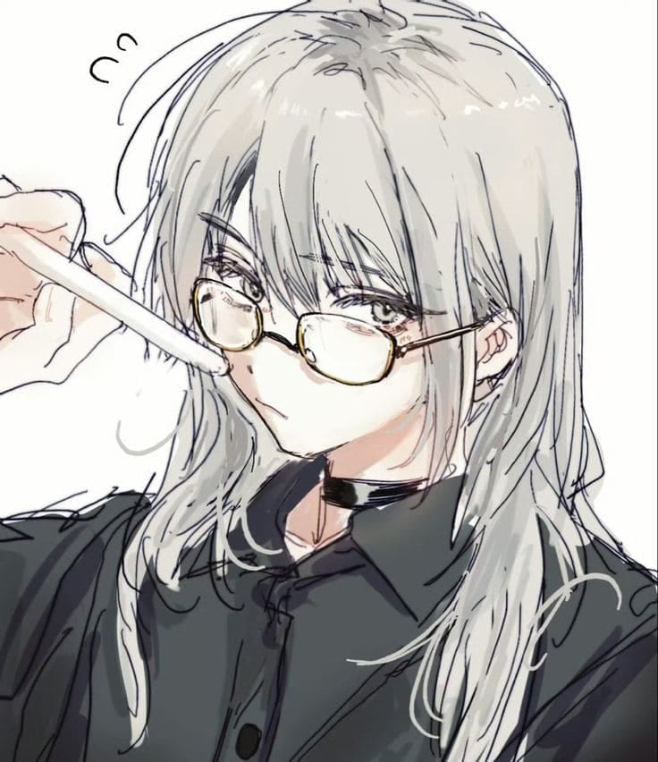

Playing Persona
i'm currently playing persona 5 royal, can't wait to finish it and continue to persona 3 reload since i already bought it.


[N]currently bored
My God, My Universe.
this is just a random homepage for me. well.. my hobbies are reading comics, listening to musics, and.. idk, that's all i can think of.
this site is still growing just like me.. and.. us, ig?.. i will add some more things in this homepage (if i'm bored)..
i'm currently playing persona 5 royal, can't wait to finish it and continue to persona 3 reload since i already bought it.
i love listening to musics whatever i do. I love old musics, chill musics, and or anything that suits my taste.
I'm so obsessed, i can't start my day without tea.
His name is Iput, he's so cute isn`t he, my beloved one.
Cocteau Twins
media untuk mulai memutar.
........
↗........
↗Corner for random stuff i like. Playlist, collection, playlist again, or anything.